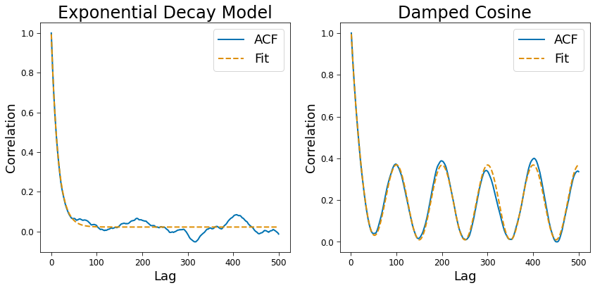
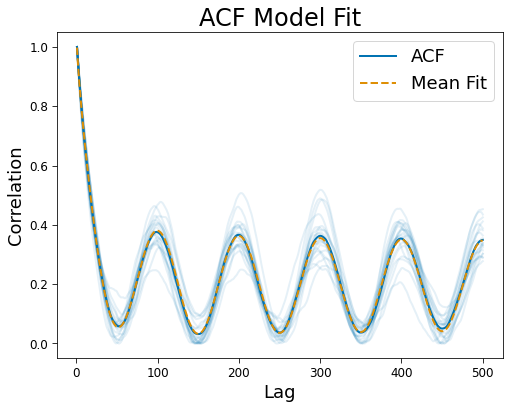

03. ACF Objects
Contents
[1]:
import numpy as np
import matplotlib.pyplot as plt
from statsmodels.tsa.stattools import acf as compute_acf
from neurodsp.sim import sim_oscillation
from neurodsp.spectral import compute_spectrum
from timescales.sim import sim_ou
from timescales.fit import ACF
from timescales.conversions import convert_knee
from timescales.autoreg import compute_ar_spectrum
from timescales.plts import set_default_rc
set_default_rc()
03. ACF Objects¶
This tutorials explores the use of the ACF objects.
[2]:
# Settings
n_seconds = 20
fs = 1000
knee_freq = 10
tau = convert_knee(knee_freq)
ar_order = 50
# Simulate a signal
np.random.seed(0)
sig = sim_ou(n_seconds, fs, tau, mu=0, std=2)
sig_osc = sig + sim_oscillation(n_seconds, fs, knee_freq)
[3]:
# Compute spectrum using method
acf = ACF()
acf.compute_acf(sig, fs)
[4]:
# Or using an external function
corrs = compute_acf(sig, nlags=500, qstat=False, fft=True)
lags = np.arange(len(corrs))
acf = ACF(lags, corrs, fs)
Fitting: 1d¶
PSD objects support two ACF models. The first is a simple exponential decay - appropropriate when no oscillations are present. A second damped cosine model is available when oscillations are present. However, when multiple oscillatons are present, the PSD models is suggested.
[5]:
fig, axes = plt.subplots(ncols=2, figsize=(14, 6))
# Exponential
acf.fit()
acf.plot(ax=axes[0], title='Exponential Decay Model')
# Damped cosine
acf_cos = ACF()
acf_cos.compute_acf(sig_osc, fs, nlags=500)
acf_cos.fit(with_cos=True)
acf_cos.plot(ax=axes[1], title='Damped Cosine')

Fitting: 2d¶
2d arrays of signals or correlations are supported.
[6]:
# Simulate
fs = 1000
n_seconds = 5
nsigs = 20
sigs = np.zeros((nsigs, int(n_seconds * fs)))
for ind in range(nsigs):
np.random.seed(ind)
sigs[ind] = sim_ou(n_seconds, fs, tau, mu=0, std=2)
sigs[ind] += sim_oscillation(n_seconds, fs, knee_freq)
[7]:
# Fit
acf = ACF()
acf.compute_acf(sigs, fs, nlags=500)
acf.fit(with_cos=True, n_jobs=-1)
acf.plot()

Results¶
Optimized parameters, labels, and model r-squared values are stored as attributes.
[8]:
acf.param_names
[8]:
['exp_tau',
'osc_tau',
'osc_gamma',
'osc_freq',
'amp_ratio',
'height',
'offset']
[9]:
acf.params[:5]
[9]:
array([[1.41596274e-02, 5.75828900e-02, 1.00000000e-01, 4.96851887e+00,
6.11214625e-01, 7.78241857e-01, 2.19397589e-01],
[1.78506249e-02, 3.44993307e-05, 2.96296520e-12, 5.00368526e+00,
8.07856339e-01, 7.74575854e-01, 1.86776492e-01],
[1.94496772e-02, 9.99999989e-01, 9.60349691e-02, 5.00253943e+00,
7.34143279e-01, 8.31915435e-01, 1.78194125e-01],
[1.75063738e-02, 4.35207947e-03, 7.12521139e-04, 4.99162831e+00,
8.10755871e-01, 7.76777111e-01, 2.05387302e-01],
[1.50673823e-02, 9.99999997e-01, 1.17410465e-13, 5.00554451e+00,
7.77721345e-01, 8.14000705e-01, 1.95504667e-01]])
[10]:
acf.rsq[:5]
[10]:
array([0.97198941, 0.97247628, 0.96448355, 0.95324171, 0.96872868])